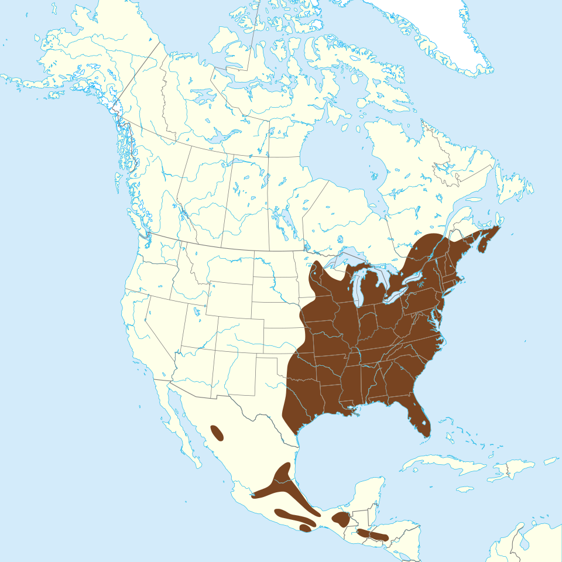

Quick Facts
- Size: 8-13 inches
- Weight: 2-5 ounces
- Lifespan: 2-5 years; Up to 15 in captivity
- Conservation: Least Concern
- Range: Forests in parts of North America, Europe, and Asia
Key Nighttime Adaptations
Flying squirrels have large black eyes, which allow them to see more clearly at night. They have specialized long whiskers which can feel the environment around them so that even during moonless nights, they can navigate in complete darkness.
Diet
They are omnivores primarily feasting on mushrooms and spores. They also eat a variety of nuts, seeds, and even truffles. On a very rare occasion, they may also consume small insects or bird eggs.
Role in Ecosystem
Flying squirrels play a special role in the spore distribution of mushrooms and other fungi, which are spread to new locations in their droppings. Because of their diet, they also plant seeds, helping the plant life spread.
Fun Fact: Flying squirrels glow pink under UV fluorescent lights! Scientists are still unsure about the purpose of their pink glow, as it can sometimes make it easier for predators to find them.


Light Pollution's Effect on Flying Squirrels
Flying squirrels can be easily blinded by bright artificial lights. Bright lights can leave them disoriented and vulnerable to predators. They primarily forage at night in the safety of the darkness. Bright lights can disrupt their natural foraging times, causing them to be exposed to predators in the daylight. Light pollution can also wash out disrupt the squirrels' subtle visual signals given off by their biofluorescent fur.